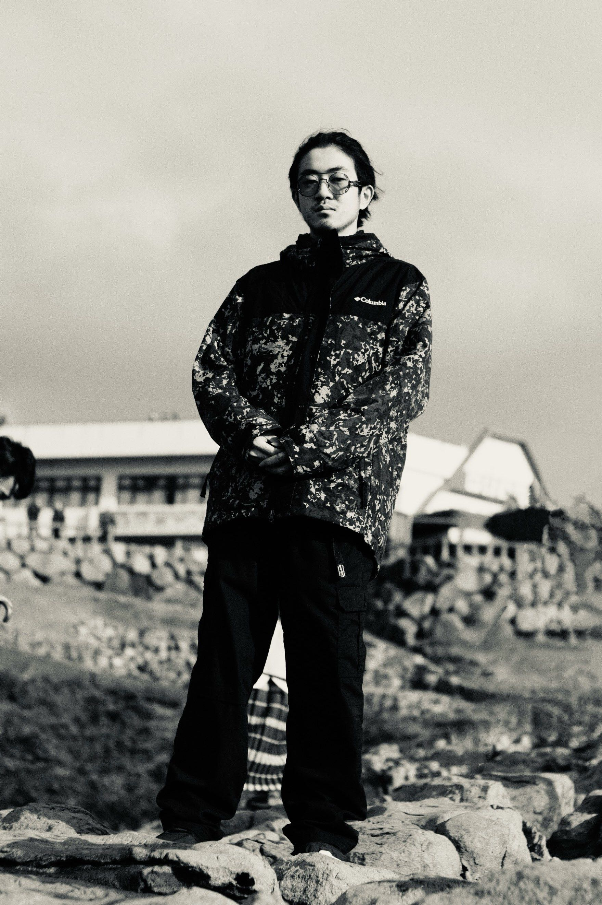

Biography
Tusq 輔

2003年生まれ。
5歳からRCC Drum Schoolでジャズドラムを専攻し、14歳から作編曲、17歳からDJを独学する。
18歳からTusq名義で、ドラム・作編曲・DJなどの音楽活動を開始。その他、イベントの企画運営・技術監修やVTuberへの楽曲提供なども行う。
2026年現在は、情報科学芸術大学院大学（IAMAS）で現代音楽（アルゴリズミック・コンポジション）を専攻。主に知能システム工学を用いた音楽表現を研究しており、「†Vibe-Patching†」をはじめとしたシステム開発を行う。